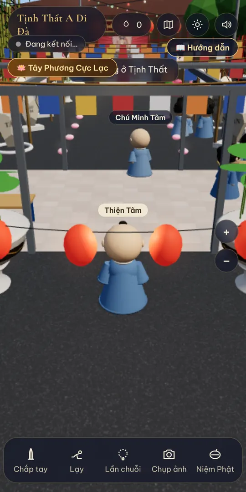
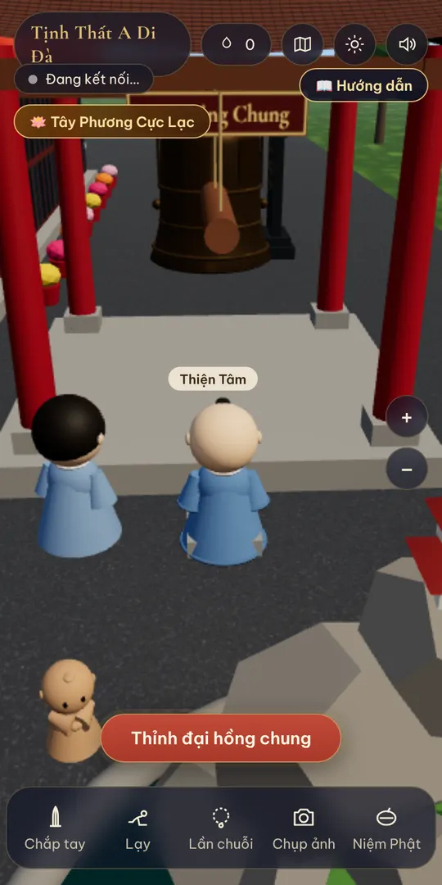
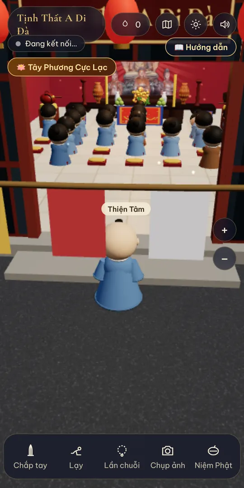
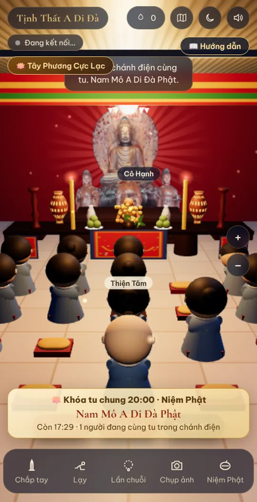
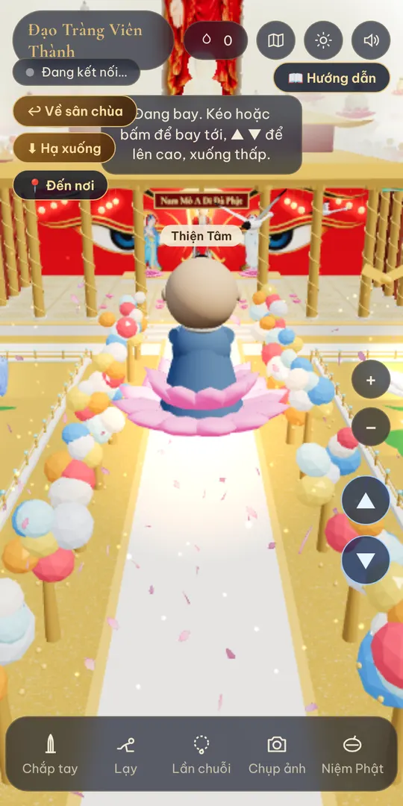
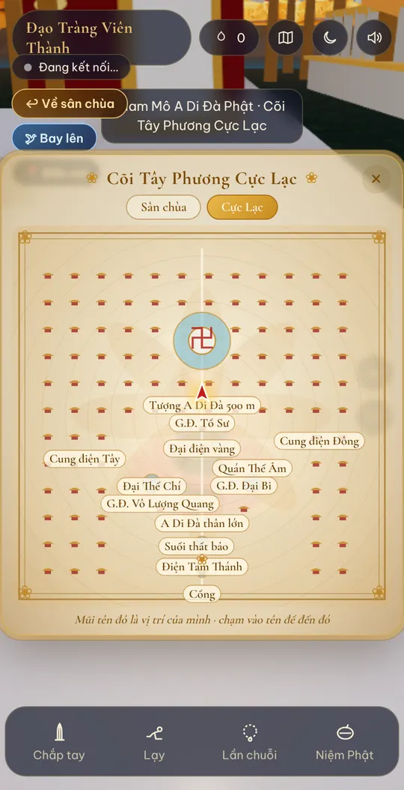
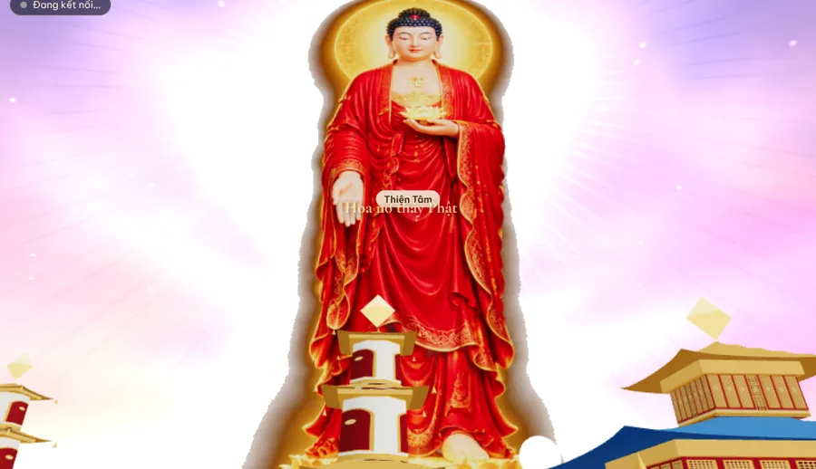
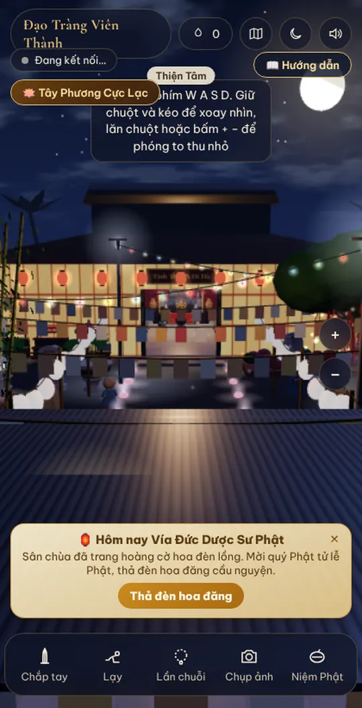
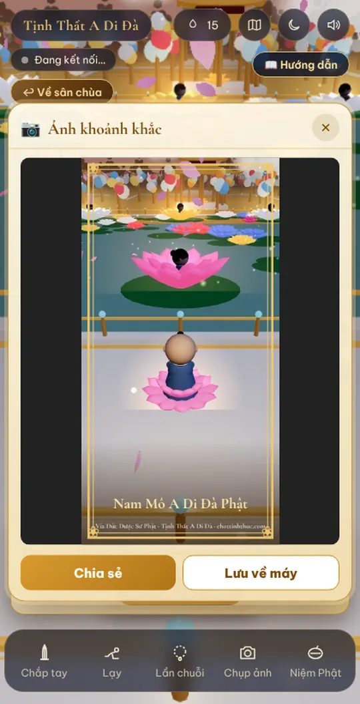
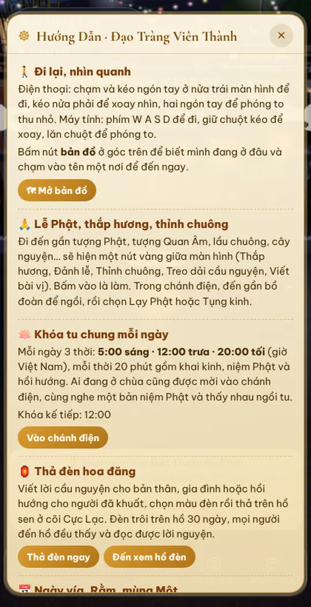

Vào chùa
- Mở trình duyệt (Chrome, Safari, Samsung Internet…), vào chottinhthuc.com, chọn mục Đạo Tràng Viên Thành.
- Đợi cảnh chùa tải xong (lần đầu khoảng 10–30 giây, tùy mạng).
- Gõ pháp danh hoặc tên của mình, tên này sẽ hiện trên đầu nhân vật để mọi người nhận ra nhau.
- Bấm Vào chùa. Lần đầu vào, bảng hướng dẫn sẽ tự mở.
Nên bật loa để nghe tiếng chuông gió, tiếng tụng kinh và nhạc niệm Phật.
Đi lại và nhìn quanh
📱 Trên điện thoại
- Đặt ngón tay ở nửa trái màn hình rồi kéo nhẹ theo hướng muốn đi. Thả tay ra là dừng.
- Kéo ngón tay ở nửa phải màn hình để xoay nhìn quanh.
- Dùng hai ngón tay chụm lại hoặc mở ra để phóng to, thu nhỏ. Hoặc bấm nút + − bên phải.
- Chạm một chỗ trên mặt đất để nhân vật tự đi tới đó.
💻 Trên máy tính
- Phím W A S D hoặc các phím mũi tên để đi.
- Giữ chuột trái và kéo để xoay nhìn, lăn chuột để phóng to, thu nhỏ.
- Phím M mở bản đồ.

Các nút trên màn hình
Lễ Phật, thắp hương, thỉnh chuông
Chỉ cần đi đến gần, giữa màn hình sẽ hiện một nút vàng. Bấm vào là làm:
- Tượng Quan Âm ở sân bên trái: Thắp hương.
- Lầu chuông bên phải: Thỉnh đại hồng chung.
- Cây nguyện: Treo dải cầu nguyện, có thể viết lời nguyện riêng.
- Bàn bài vị trước chánh điện: Viết bài vị cầu an, cầu siêu cho người thân.
- Trong chánh điện: đến trước tượng Phật để Đảnh lễ Phật. Đến gần bồ đoàn để Ngồi, rồi chọn Lạy Phật hoặc Tụng kinh, chữ kinh hiện lên để tụng theo.
- Điện Tỳ Lô phía sau chánh điện: đảnh lễ Đức Tỳ Lô Giá Na.


Khóa tu chung mỗi ngày
Mỗi ngày có 3 thời khóa niệm Phật chung. Ai đang ở chùa cũng được mời vào chánh điện, cùng nghe một bản niệm Phật và thấy nhau ngồi tu dù ở xa.
Giờ Việt Nam · mỗi thời 20 phút
- Trước giờ khóa tu 15 phút, phía trên thanh nút sẽ hiện thẻ “Khóa tu chung lúc …” kèm đồng hồ đếm ngược.
- Bấm Vào chánh điện tu cùng, nhân vật được đưa lên bồ đoàn và tự ngồi xuống.
- Thẻ cho biết còn bao nhiêu phút và có bao nhiêu người đang cùng tu.
- Ngồi đến hết thời khóa sẽ được ghi vào sổ công đức.

Thả đèn hoa đăng cầu nguyện
Viết lời cầu an cho bản thân, gia đình hoặc hồi hướng cho người đã khuất. Đèn hoa sen được thả trên hồ ở cõi Cực Lạc và trôi ở đó 30 ngày. Ai đến gần hồ cũng thấy và đọc được lời nguyện.
- Bấm 📖 Hướng dẫn rồi chọn Thả đèn ngay. Hoặc đến Hồ đèn hoa đăng ở Cực Lạc và bấm nút vàng.
- Ghi tên người thả, lời nguyện (tối đa 90 chữ), chọn màu đèn: hồng, vàng, xanh, trắng, tím.
- Bấm Thả đèn trên hồ sen, nhân vật được đưa đến bờ hồ để nhìn đèn trôi ra.
Xin viết lời lẽ thanh tịnh, trang nghiêm. Lời nguyện có từ ngữ chưa phù hợp sẽ không được thả.
Cõi Tây Phương Cực Lạc
Phía sau điện Tỳ Lô có cổng vàng dẫn vào cõi Cực Lạc rộng 2000 mét: ao thất bảo, cây báu treo anh lạc, hoa sen ngũ sắc, chim bạch hạc, khổng tước, chư Bồ Tát ngồi trên sen giữa không trung, các cung điện nguy nga và tượng Đức A Di Đà cao 500 mét.
- Bấm 🪷 Tây Phương Cực Lạc để sang ngay, không cần đi bộ.
- Ở cõi Cực Lạc, nhân vật đứng trên hoa sen. Bấm 🕊 Bay lên để bay, dùng nút ▲ ▼ để lên cao, xuống thấp. Bay cao để thấy trọn tượng 500 mét.
- Bấm 📍 Đến nơi hoặc mở 🗺 Bản đồ rồi chạm vào tên một nơi để đến ngay: Điện Tam Thánh, Bảo tháp, các giảng đường, cung điện Đông và Tây, tượng A Di Đà 500 m, Hồ đèn hoa đăng…
- Bấm ↩ Về sân chùa để quay về.



Nghe kinh trong giảng đường
Ở cõi Cực Lạc có 3 giảng đường. Bước vào bên trong là tự phát tiếng tụng kinh, niệm Phật. Ai vào cùng lúc sẽ nghe cùng một đoạn. Bước ra là tiếng nhỏ dần.
Rằm, mùng Một và ngày vía
Game tự tính lịch âm. Vào ngày Rằm, mùng Một và các ngày vía, sân chùa tự trang hoàng cờ Phật giáo ngũ sắc và đèn lồng, kèm thẻ thông báo hôm nay là ngày gì.
- Đại lễ Phật Đản (15/4 ÂL): có bồn Lễ Tắm Phật trước chánh điện, đến gần bấm “Tắm Phật”.
- Đại lễ Vu Lan (15/7 ÂL): chọn cài hoa hồng đỏ (còn Mẹ) hoặc hoa hồng trắng (mất Mẹ) lên áo nhân vật.
Các ngày vía sắp tới
| Đang tính lịch… |

Gặp nhau và trò chuyện
- Góc trên bên trái hiện số người đang ở chùa. Người thật đang online hiện tên trên đầu.
- Chạm vào tên một người để mở hộp trò chuyện: chọn câu có sẵn hoặc gõ lời tùy ý, giữ nút micro để gửi tin nhắn thoại, hoặc bấm Gọi để nói chuyện trực tiếp.
- Các chú tiểu, Phật tử mô phỏng trong chùa khi được chạm vào sẽ chào “A Di Đà Phật”.
- Xin giữ lời nói hòa nhã như khi đến chùa thật.
Thời khóa và chụp ảnh
📿 Thời khóa mỗi ngày
Mỗi câu niệm Phật, mỗi lạy, mỗi hạt chuỗi, câu kinh, thời khóa tu chung, đèn hoa đăng… đều được ghi theo ngày. Bấm 💧 Sổ công đức để xem thời khóa hôm nay và số ngày tu tập liên tục, giúp mình giữ công phu đều đặn.
Sổ được lưu ngay trên điện thoại hoặc máy tính đang dùng.
📷 Chụp ảnh chia sẻ
Bấm Chụp ảnh ở thanh dưới cùng. Ảnh có khung hoa sen và dòng chữ “Nam Mô A Di Đà Phật”. Bấm Chia sẻ để gửi lên Facebook, Zalo, hoặc Lưu về máy.


Gặp khó khăn?
Game chạy chậm, giật hoặc điện thoại nóng
Bấm 📖 Hướng dẫn, kéo xuống cuối, bấm Bật chế độ nhẹ. Hình sẽ bớt sắc nét một chút và cảnh xa được ẩn bớt nên mượt hơn. Máy yếu thường được game tự bật sẵn. Đóng bớt các ứng dụng khác cũng giúp chạy nhanh hơn.
Không nghe thấy tiếng
Kiểm tra loa điện thoại không ở chế độ im lặng, nút 🔊 trong game đang bật. Một số máy cần chạm vào màn hình một lần sau khi vào chùa thì mới phát tiếng.
Không thấy người khác, không gọi được
Phần gặp gỡ cần mạng ổn định. Nếu góc trên hiện “Đang kết nối…” lâu, thử tải lại trang. Khi gọi hoặc gửi tin nhắn thoại, máy sẽ hỏi quyền dùng micro, hãy bấm Cho phép.
Màn hình bị đen hoặc trang tự tải lại
Máy có thể thiếu bộ nhớ. Đóng các tab và ứng dụng khác, rồi mở lại. Nên dùng Chrome bản mới nhất.
Có mất phí không?
Hoàn toàn miễn phí, không quảng cáo, không cần đăng ký tài khoản.